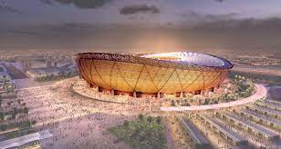
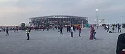
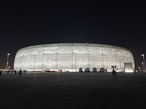
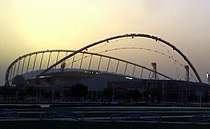
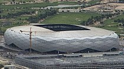
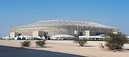
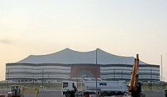

estadios de qatar
estadio iconico de lusail

El estadio fue presentado el 6 de octubre de 2010 en Londres y se construirá especialmente para la realización de la Copa Mundial de Fútbol de 2022.1 El fallecido arquitecto alemán Albert Speer Jr. estuvo involucrado en el diseño del estadio. El 15 de diciembre de 2018 se reveló el diseño del estadio oficial, el techo recubierta con una capa de color plateado y su fachada contará con una capa recubierta de color dorado y adentro contará con palcos y un hotel para los espectadores, y al final dijeron que ampliarán la capacidad a 94 500 espectadores y tomando en cuenta el diseño base de Albert.
Después del mundial, es posible que el estadio sea desmantelado o se reduzca la capacidad.
Estadio Al Janoub
.jpg)
Fue diseñado por la aclamada arquitecta británica-iraquí Zaha Hadid y su estudio de arquitectura, Zaha Hadid Architects. De acuerdo con los diseñadores, la inspiración para el proyecto son las velas de los barcos dhow que se movían a través de las corrientes del Golfo Pérsico.
El recinto tiene una capacidad de 40 000 personas, que podría reducirse a una capacidad de 20 000 asientos después de la Copa Mundial.Cuenta con unas dimensiones de 105 × 68 metros cuadrados y la superficie del campo de fútbol es de césped de hierba natural. Tiene un techo retráctil de 1400 piezas que es acompañado por un sistema de refrigeración capaz de enfriar las áreas de espectadores a 18°C y el campo de juego a 20°C. El complejo deportivo incluye un salón de usos múltiples, con spas y piscinas y un centro comercial. Cuenta con un gran servicio de transportes, con autobuses, taxis y transporte ferroviario. El estadio se encuentra a cinco minutos del nuevo Aeropuerto Internacional de Doha.
Estadio 974

El concepto del estadio fue diseñado por Fenwick Iribarren Architects.El estadio está construido en un sitio frente al mar de 450 000 metros cuadrados y está situado en un promontorio artificial. Tiene un diseño modular e incorpora 974 contenedores de envío reciclados en homenaje a la historia industrial del sitio y el código de marcación internacional para Qatar (+974). Algunos de los contenedores albergan los servicios del estadio, como baños y concesiones.Los contenedores de envío y los asientos utilizados por el estadio se desmantelarán más tarde y se proporcionarán como asistencia a los países subdesarrollados de África; es la primera sede temporal en la historia de una Copa Mundial de la FIFA.
El estadio es uno de los ocho que se están transformando para el torneo. El proceso de adquisición para la conversión del estadio comenzó en 2017. La construcción del estadio involucró a HBK Contracting Company (HBK),DCB-QA, Time Qatar, Fenwick Iribarren Architects (FI-A), Schlaich Bergermann Partner y Hilson Maron.
El estadio recibió una calificación de cuatro estrellas del Sistema de Evaluación de la Sostenibilidad Global (GSAS).
estadio al thumama

El estadio Al Thumama es un estadio de fútbol que se ubica en Doha, Catar. Es una de las sedes oficiales de la Copa Mundial de Fútbol de 2022.
La inauguración del estadio tuvo lugar el 22 de octubre de 2021 por la noche cuando el estadio Al Thumama acogió la final de la Copa Amir entre Al Rayyan y Al Sadd.
Su forma se asemeja a un tocado árabe conocido como gahfiya. Con capacidad de 40,000 personas, el estadio se ubicará en el poblado de Al Thumama, a las afueras de Doha. Además, se conectará a la ciudad capital por medio del sistema de metro nacional
La construcción del estadio Al Thumama, junto con otros estadios construidos en previsión de la Copa Mundial de la FIFA 2022, ha sido condenada por múltiples organizaciones de derechos humanos. Amnistía Internacional alega que hasta 15 000 trabajadores migrantes han muerto mientras trabajaban en malas condiciones en las obras de construcción del estadio de Qatar.
estadio internacional khalifa

El estadio Internacional Khalifa (en árabe: ستاد خليفة الدولي), también conocido como estadio Nacional, es un estadio multiusos ubicado en la ciudad de Doha, Catar. Es la sede oficial de la Selección de fútbol de Catar.
Ha sido sede principal de los Juegos Asiáticos de 2006, lo cual permitió que su aforo inicial de 20.000 espectadores se incrementara a 50 000; en 2011 fue la sede de la final de la Copa Asiática 2011 de fútbol disputada entre Japón y Australia; y en 2019 del Campeonato Mundial de Atletismo de 2019. En 2022 será uno de los estadios de la Copa Mundial de Fútbol de 2022, en donde se disputarán varios encuentros de la fase de grupos, octavos de final, cuartos de final y una semifinal
.
estadio ciudad de la educacion

El estadio Qatar Foundation también conocido como estadio Ciudad de la Educación, es un estadio de fútbol ubicado en Rayán, Catar.Se inauguró el 15 de junio de 2020, siendo la tercera sede oficial inaugurada para la Copa Mundial de Fútbol de 2022.3
Su forma se elabora como un diamante irregular, con capacidad de 45 350 asientos, se ubicará en la Ciudad de la Educación perteneciente a la Qatar Foundation. Estará conectado al resto del área metropolitana de Doha por el metro nacional.6 Posterior a la Copa Mundial el estadio sólo conservará 25 000 asientos y pasará a ser sede de algún equipo local.
estadio ahmrd bin ali

El estadio Ahmed bin Ali es un estadio multipropósito ubicado en Rayán, Catar. El escenario deportivo fue sede del torneo de fútbol de los Juegos Asiáticos de 2006 y en 2011 una de las sedes de la Copa Asiática de fútbol.
Será sede para algunos partidos de la fase de grupos de la Copa Mundial de Fútbol de 2022.
ara iniciar su remodelación para la Copa Mundial de Fútbol de 2022, fue demolido en mayo de 2015 para albergar varios partidos. La remodelación finalizó en noviembre de 2019.
estadio al bait

El estadio Al Bayt es un estadio de fútbol que se ubica en Jor, Catar. Es una de las sedes oficiales de la Copa Mundial de Fútbol de 2022. Tiene una capacidad prevista para 60 000 personas sentadas. Actualmente es la sede del Al Khor SC.
La construcción inició en 2015 después de la demolición del antiguo estadio Al Khor. Su forma se elaboró como una concha asimétrica al estilo de una tienda beduina, con capacidad de 60 000 asientos para los aficionados, además de 1000 adicionales para la prensa. De igual forma el estacionamiento en el lugar cuenta con 6000 autos, 350 autobuses y el ir y venir de 150 autobuses privados o públicos, así como 1000 taxis y taxis acuáticos, incluyendo su conexión con el metro de Doha. El estadio fue inaugurado en junio de 2020.